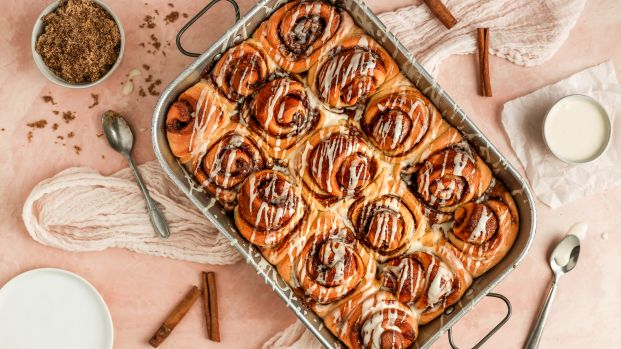

Best Mother's Day Dinner Recipe

Treat the mom in your life to something special with elevated dinner ideas from pasta to stuffed chicken and beyond.
How to Impress Mom on Mother's Day

Show the mom in your life how much you care with recipes ranging from easy to indulgent.
Bread Machine Cinnamon Buns
Officially obsessed with this recipe! The dough is SUPER easy to work with and not sticky at all, and when the buns are baked they are so incredibly fluffy. My friends and I indulged and ate them all!